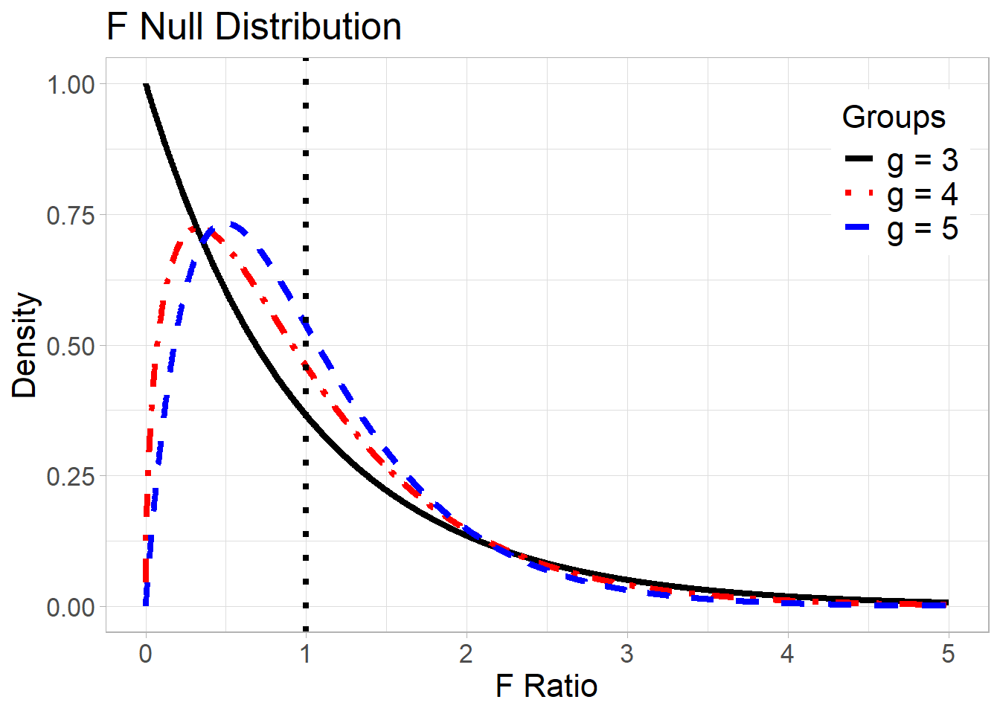
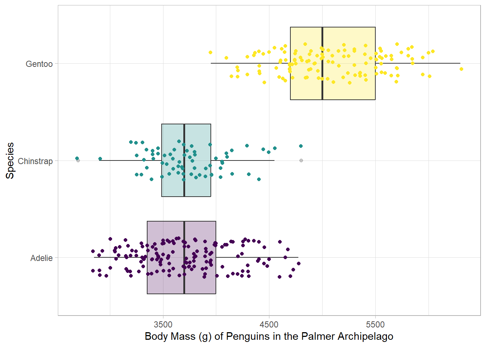
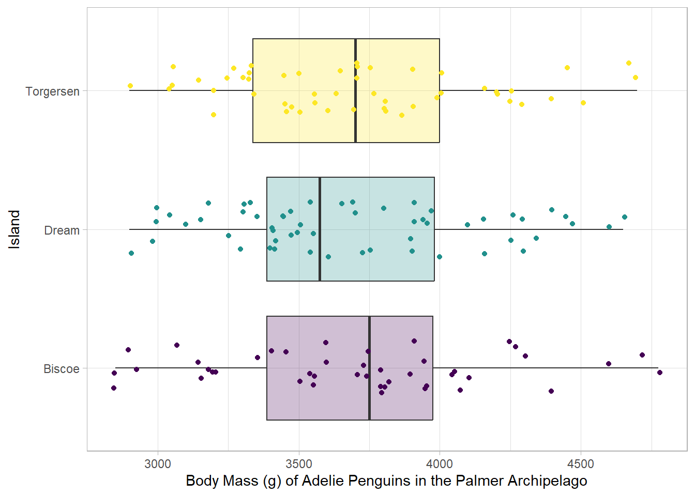
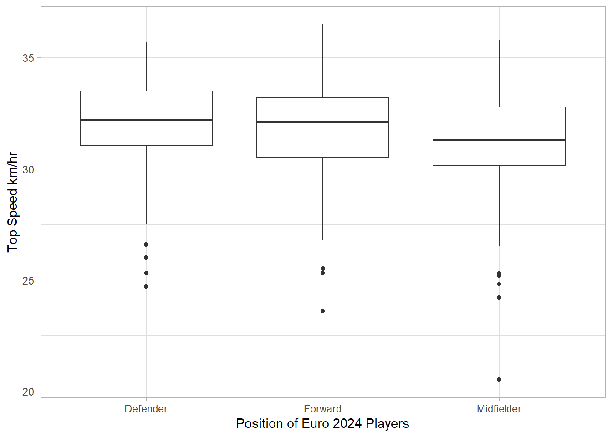
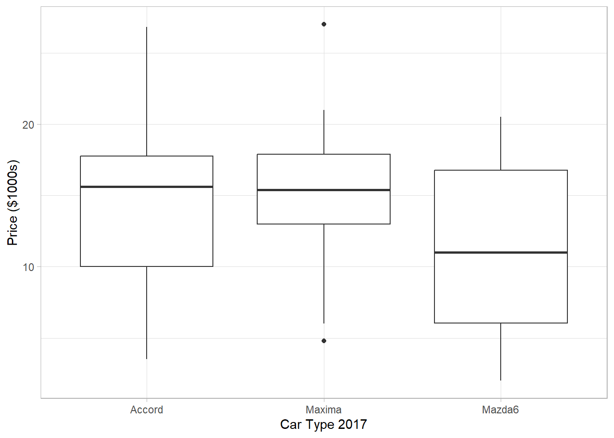

Multiple Comparisons
1 Types of Errors
Type I Error Rate (α): the probability of finding evidence against the null hypothesis when the null hypothesis is true.
- Also called the “significance level”
Confidence (1-α): the probability of finding no evidence against the null hypothesis when the null hypothesis is true.
Type II Error Rate (β): the probability of finding no evidence against the null hypothesis when the null hypothesis is false.
Power of the Test (1 – β): the probability of finding evidence against the null hypothesis when the null hypothesis is false, i.e. supporting a true alternative hypothesis
Therefore,
Every time we find no evidence against a null hypothesis, we are either correct or making a Type II error.
Every time we find evidence against a null hypothesis, we are either correct or making a Type I error.
| Possible Hypothesis Tests outcomes | Reality | |
| Null Claim is TRUE | Null Claim is FALSE | |
| Conclude there is no evidence against the null | Confidence Correct decision Probability = \(1-\alpha\) |
Type II Error Incorrect Decision Probability = \(\beta\) | |
| Conclude there is evidence against the null | Type I Error Incorrect Decision Probability = \(\alpha\) |
Power Correct decision Probability = \(1-\beta\) | |
We’ve been evaluating the strength of the evidence against the null hypothesis based on the context of the situation, but we need to scale that strength of evidence based on the level of certainty we need in our results. We define a moderate level of evidence as the level of significance (α), which is also the probability of Type I Error.
Though there is movement in the scientific community away from what is often called “dichotomous decision-making”, we still see the significance level/Type I error rate used in the decision-making process to either reject or fail to reject the null hypothesis.
Significance Level (\(\alpha\)): the probability level of Type I error at which we determine we have sufficient evidence against the null hypothesis as a reasonable assumption
We can qualify our evidence as very strong, strong, moderate, some, little, very little, and no evidence against the null hypothesis.
Statistically Meaningful/Discernible Difference: when evidence is moderate or stronger based on the selected Type I Error Rate/Significance Level
- We will use this language instead of “statistically significant”
1.1 How do we control for types of error?
The two types of error actually play off of each other.
Type I: Conclude there is evidence against the null hypothesis when the null is true.
The probability of committing Type I error, α, is under our control as experimenters and is known as the level of significance which the experimenter chooses.
When we decide there is evidence against the null hypothesis, we automatically know the probability of a Type I error, which is defined by the significance level
If we decrease our significance level, we decrease the probability of committing Type I error
Type II: Conclude there is insufficient evidence against the null hypothesis when the null is false
When we decide there is no evidence against a null hypothesis, it is much more difficult to determine the probability of a Type II error.
Type II error depends on several factors which may be unknown to the experimenter. The two factors we do have in our control are sample size and significance level.
If we increase the sample size, we decrease the probability of committing Type II error.
If we decrease significance level (Type I error), we increase the probability of committing a Type II error.
The researcher has full control over the following four characteristics that impact Type I and Type II Error, but the researcher should provide justification for each choice:
The null and alternative Hypotheses are determined based on the research question
The desired significance level should be chosen based on the associated dangers of committing a Type I Error.
If Type I Error is especially dangerous, a lower significance level should be chosen.
The 0.05 significance level is a common choice, but is not appropriate for all situations.
Lower significance level increases the probability of Type II error for a given sample size
- The desired power should be based on the associated dangers of committing a Type II Error.
If Type II Error is especially dangerous, a higher power should be chosen.
Higher power requires a higher sample size for a given significance level.
A MINIMUM OF 0.80 IS EXPECTED IN MOST CASES FOR POWER
- The chosen effect size determines the difference that is practically significant in the context of the study. Often an estimate of the population variance may be necessary; this may be estimated based on previous studies or prior information. We will talk more about this issue.
2 Ethics in Decision Making: P-hacking is a Reality
It is important to remember that p-values indicate the strength of the evidence against the null model, not the strength or reasonableness of the model in the first place. Good scientific practice is that the null and alternative models/hypotheses are determined prior to collecting data and then we proceed with the data collection and analysis. P-hacking is when researchers change the model (change comparison groups for example) after data collection to get a small p-values.
Why does this happen?
“Journals generally prefer to publish statistically significant results, so scientists have incentives to select ways of parsing and analyzing their data that produce a p-value under 0.05. That’s p-hacking” ~ Wired 2019
Read more here: https://www.wired.com/story/were-all-p-hacking-now/
For all these reasons, the scientific community is starting to move away from interpreting results solely on the basis of “statistical significance” and rejecting or failing to reject the null hypothesis. Therefore, we will emphasis using p-values as onepiece of evidence to evaluate the strength of evidence against the null hypothesis and we will always consider at least one other piece of evidence, such as practical significance, in our conclusions and inferences about the population.
3 Estimating the Effect Size
The p-value helps us quantify the strength of evidence against the null hypothesis, but it does not tell us if the difference observed is a meaningful difference in the context of the problem/field of study. For that we must consider the
Practical Significance: the observed difference between the two means or the mean of the differences (the effect) is meaningful in the context of the problem.
The answer to the question “how big/small of a difference is meaningful?” completely depends on the context of the problem. Usually, a meaningful effect size is identified based on previous studies or pilot studies.
Cohen’s d: the magnitude of the difference (\(\Delta\)) between the actual population means relative to standard deviation of the observations
\[ d = \frac{\Delta}{s} \]
Effect Size is good metric for what might be a meaningful difference, rather than just a statistically detectable difference.
Effectively it measures how many standard deviations away our two means are in our samples.
A d of 0.5 indicates that the two group means differ by 0.5 standard deviations.
A d of 1 indicates that the group means differ by 1 standard deviation.
A d of 2 indicates that the group means differ by 2 standard deviations.
3.0.1 Guidelines for Effect Size
Cohen’s d tends to be classified as small, medium, and large effect sizes, but remember there is no “good” effect size as whether a “small” or “large” effect is desired depends largely on context. These are guidelines, not rules.
A value of 0.2 represents a small effect size.
The average of group 1 is roughly 0.2 standard deviations greater than group 2
Approximately 58% of individuals in group 2 would be below the average of group 1
A value of 0.5 represents a medium effect size.
The average of group 1 is roughly 0.5 standard deviations greater than group 2
Approximately 70% of individuals in group 2 would be below the average of group 1
A value of 0.8 represents a large effect size.
The average of group 1 is roughly 0.8 standard deviations greater than group 2
Approximately 80% of individuals in group 2 would be below the average of group 1
Effect Size for a Two- Sample Independent and Paired t-Tests
The effect size for a two-sample tests is roughly the difference between the two means or the mean difference divided by standard deviation.
| Independent Two Group Effect Size | Matched Pairs Effect Size |
| \[ d = \frac{\bar{x}_1 - \bar{x}_2}{\sqrt{\frac{s_1^2 + s_2^2}{2}}} \] | \[ d = \frac{\bar{x}_D}{s_D} \] |
Note that for a “less than” alternative hypothesis the effect size would be negative.
3.1 Sample Size and Effect Size
The ability to detect a specific effect size depends on the sample size. For example, in order to detect a statistically discernible difference at a level of \(\alpha = 0.05\) here are the approximate sample sizes we would need for each effect size:
| Effect Size d | Sample Size, n, Needed per Group |
| 0.2 | 200 |
| 0.4 | 50 |
| 0.6 | 23 |
| 0.8 | 13 |
| 1.0 | 8 |
BIG IDEA: The ___________________ the magnitude effect size the ______________ the sample size needed in order to detect a statistically meaningful difference.
4 The p-value alone is not enough evidence
As we see, there are many considerations for drawing a conclusion based on data and given the relationship between effect size and sample size and the p-value, we should realize that a p-value alone is not sufficient to draw a conclusion. We will outline a few considerations here:
4.1 The strength of evidence depends on the field of study
The purpose of a hypothesis test is to evaluate the strength of evidence provided by the sample against the null hypothesis. The p-value provides one piece of evidence but how small is small enough for a p-value? The standard significance level of 0.05 is a remnant of pre-computer days when exact p-values were not possible to calculate. Instead, we should consider
How plausible is the null hypothesis?
- If the null hypothesis represents an assumption that the people you must convince have believed for years, strong evidence (smaller significance level) will be needed to persuade them.
What are the consequences of finding evidence against the null hypothesis?
- If we find evidence against the null in favor of the alternative means making an expensive changeover or perhaps influences a matter of life and death, then stronger evidence may be necessary and will need to adjust our Type I and Type II Error rates accordingly.
Example: The certainty of the Higgs boson particle’s existence was based a criterion that the p-value be less than (approximately) 1 in 3.5 million
4.2 The strength of evidence depends on the alternative hypothesis
The choice of alternative hypothesis (one-sided vs. two-sided) affects the p-value. If we have a p-value of 0.035 for a one-sided test, what is the p-value for a two-sided test?
Does that change conclusions?
4.3 The strength of evidence can be impacted by sample size
As we saw previously, the effect size and sample size relationship with our ability detect a statistically meaningful difference.
We need to be careful with large sample sizes (e.g., in Machine Learning with found data from the internet) because a large enough sample size can make even a small difference appear “statistically significant”, but it may not be “practically significant”.
In Stat Speak: Because large random samples have small chance variation, very small population effects produce very small p-values if the sample is large enough.
- In Regular Speak: A small, meaningless difference can look important if we sample enough individuals!
In Stat Speak: Because small random samples have a lot of chance variation, even large population effects can fail to be significant if the sample is small enough.
- In Regular Speak: A large, meaningful difference can be shown to not be “statistically significant” if we sample too few individuals!
Statistical “significance” does not tell us whether an effect is large enough to be important. That is statistical “significance” is not the same thing as practical significance or importance.
5 Multiple Comparisons
We previously discussed the two-sample t-test for comparing two independent groups (sub-populations) by testing for the difference between \(\mu_1\) and \(\mu_2\). Researchers are often interested in comparing three or more groups, and we can test for the difference among \(\mu_1, \mu_2, \dots, \mu_g\) where \(g\) is the number of groups.
We can test for the difference among \(\mu_1, \mu_2, \dots, \mu_g\) by analyzing two kinds of variance in samples. The first kind is referred to as the within-group variance (variability of individual data points in each group), and the second kind is referred to as the between-group variance (variability of sample means between groups). If observed between-group variance is relatively larger than observed within-group variance, it is statistical evidence for the difference among \(\mu_1, \mu_2, \dots, \mu_g\). Analyzing the two kinds of variance, known as the analysis of variance or ANOVA, is technical, so it requires close attention.
5.1 Why ANOVA and not Multiple T-Tests?
If we have three groups, how many t-tests would we need to conduct to test all combinations of three groups?
The problem with multiple testing, or “multiple comparisons”, is that in each test we have a rate of Type I error, meaning that even if the alternative is not true (there is actually no difference), in 5% of tests (for \(\alpha = 0.05\)) we would think the null is false and support the alternative that there is a difference. The more hypothesis tests conducted, the higher the chance that at least one of these tests will results in a Type I error.
When multiple hypothesis tests are conducted, the chance that at least one test incorrectly thinks a true null hypothesis is false increases with the number of tests.
If the null hypotheses are all true, \(\alpha\) of the tests will yield a statistically discernible result just by random chance.
Publication bias results when we only publish significant results. If the only results published are the result of Type I error, we may think there is an effect that does not actually exist.
Instead, we use ANOVA as an “omnibus” test -a way to test all of the null hypotheses at once, so when we determine there is a difference, there is only a \(\alpha\) chance we made a Type I error. We can then follow-up with methods that allow us to make multiple comparisons while controlling for Type I error.
5.2 ANOVA Hypothesis
In practice, we sometimes ask a question like “Are Groups \(1, 2, \dots, g\) different in terns of \(X\)?” (e.g., “Are Americans, Mexicans, and Canadians different in terms of the cups of coffee they drink per day?”) For statisticians, comparing a variable \(X\) between \(g\) groups is comparing \(g\) unknown distributions of \(X\). Comparing distributions is not simple, and it can be simplified by comparing the averages of distributions. It is because evidence for different averages implies evidence for different distributions.
In this regard, the null hypothesis can be stated as
- \(H_0\): \(\mu_1 = \mu_2 = \dots = \mu_g\)
- The population means of [ response variable + units] of the [population context] with [group levels + explanatory variable ] are equal.
(i.e., all sub-populations have the same average), and the alternative hypothesis can be stated as
- \(H_1\): at least one pair of \(\mu_j \ne \mu_k\) for some \(j \ne k\)
- at least one of the population means of [ response variable + units ] of the [population context] with [ group levels + explanatory variable ] is different from the others
(i.e., all sub-populations do not have the same average).
In this formulation of hypotheses, \(H_1\) is the negation of \(H_0\), so at least one pairwise difference is sufficient to reject \(H_0\) and conclude \(H_1\). For example, when \(g = 3\) groups are compared, the null hypothesis is \(H_0\): \(\mu_1 = \mu_2 = \mu_3\), and the alternative hypothesis is \(H_1\): \(\mu_1 \ne \mu_2\), \(\mu_1 \ne \mu_3\), \(\mu_2 \ne \mu_3\) and/or \(\mu_1 \ne \mu_2 \ne \mu_3\). Unlike the two-sample t-test, it is always a two-sided test pairwise alternative.
Note: The alternative hypothesis \(H_1\) is an “or-statement,”, not an “and-statement.” In addition, it is incorrect to state \(H_1\): \(\mu_1 \ne \mu_2 \ne \mu_3\). A simple correct way is to statement \(H_1\): at least one pair of \(\mu_j \ne \mu_k\) for some \(j \ne k\).
5.3 Constructing a New Test Statistic
As aforementioned, we analyze two kinds of variance in the ANOVA.
5.3.1 Within-group Variance
Suppose we take a simple random sample of size \(n_j\) from each Population \(j\), and let \(\bar{X}_j\) and \(S_j\) be the sample mean and sample standard deviation for \(j = 1, 2, \dots, g\). Let \(m = n_1 + n_2 + \dots + n_g\), the total sample size. The within-group sum of square is defined as
\[ \texttt{SSW} = (n_1 - 1) \, S_1^2 + (n_2 - 1) \, S_2^2 + \dots + (n_g - 1) \, S_g^2 \, , \tag{1}\]
and the within-group mean square is defined as
\[ \texttt{MSW} = \frac{ \texttt{SSW} }{ \nu_w } \]
where \(\nu_w = m - g\) is referred to as within-group degrees of freedom. The \(\texttt{SSW}\) measures the total variance of individual data points from their own sample means, and \(\texttt{MSW}\) estimates \(\sigma^2\) under the equal variance assumption.
5.3.2 Between-group Variance
Let \(\bar{X}_0\) be the overall sample mean which is the simple average of \(m\) data points across \(g\) groups.
Note: When \(n_1 = n_2 = \dots = n_g\) (i.e., sample sizes are balanced),
\[ \bar{X}_0 = \frac{\bar{X}_1 + \bar{X}_2 + \dots + \bar{X}_g}{g} \, . \]
In general (when sample sizes are not balanced),
\[ \bar{X}_0 = \frac{n_1}{m} \, \bar{X}_1 + \frac{n_2}{m} \, \bar{X}_2 + \dots + \frac{n_g}{m} \, \bar{X}_g \, . \]
The between-group sum of square is defined as
\[ \texttt{SSB} = n_1 (\bar{X}_1 - \bar{X}_0)^2 + n_2 (\bar{X}_2 - \bar{X}_0)^2 + \dots + n_g (\bar{X}_g - \bar{X}_0)^2 \, , \tag{2}\]
and the between-group mean square is defined as
\[ \texttt{MSB} = \frac{ \texttt{SSB} }{ \nu_b } \]
where \(\nu_b = g - 1\) is between-group degrees of freedom. In some sense, the \(\texttt{SSB}\) measures the total variance of group sample means \(\bar{X}1, \bar{X}2, \dots, \bar{X}_g\) from the overall sample mean \(\bar{X}_0\) scaled by the sample sizes \(n_1, n_2, \dots, n_g\).
5.3.3 Null Distribution of the F Statistic
When \(\texttt{MSB}\) (a measure of between-group variance) is relatively large when compared to \(\texttt{MSW}\) (a measure of within-group variance), it is statistical evidence against the null hypothesis \(H_0\): \(\mu_1 = \mu_2 = \dots = \mu_g\) and supports the alternatively hypothesis \(H_1\): at least one pair \(\mu_j \ne \mu_k\) for some \(j \ne k\). The following ratio is known as an F statistic:
\[ F = \frac{ \texttt{MSB} }{ \texttt{MSW} } \, . \]
It is a test statistic for testing \(H_0\) and \(H_1\), and its null distribution of the F distribution with \(\nu_b\) and \(\nu_w\) degrees of freedom. The letter “F” is named after Ronald Fisher (1890-1962), a British mathematical statistician and biology, who found the test statistic and its null distribution. Statisticians simply write \(F \sim \mathcal{F}(\nu_b, \nu_w)\) which means that the null distribution of the F statistic follows the F distribution with \(\nu_b\) and \(\nu_w\) degrees of freedom. Below graphically shows \(F \sim \mathcal{F}(\nu_b, \nu_w)\) when \(\nu_b = 2\) and \(\nu_w = 18\).

Shape: Skewed Right
- Why?
Center: Approximately 1
Spread: As degrees of freedom increase, i.e. sample size increases (\(\nu_w = m - g\)), the spread decreases, just like our other null distributions. Unlike our other null distribution, the variances of the samples have no effect.
The p-value associated with the F statistic is the probability of observing the calculated F statistic, or greater, assuming the null hypothesis is true and given the associated degrees of freedom.
The procedure of calculating the F statistic can be summarized in a table which is known as an ANOVA table.
| Type of Variance | Sum of Squares | Degrees of Freedom | Mean Square | F Statistic |
|---|---|---|---|---|
| Between-group | \(\texttt{SSB}\) (Equation 2) | \(\nu_b = g - 1\) | \(\texttt{MSB} = \frac{ \texttt{SSB} }{\nu_b}\) | \(F = \frac{ \texttt{MSB} }{ \texttt{MSW} }\) |
| Within-group | \(\texttt{SSW}\) (Equation 1) | \(\nu_w = m - g\) | \(\texttt{MSW} = \frac{\texttt{SSW}}{\nu_w}\) |
5.4 Example 1: Comparing Penguin Body Mass Across Species
The penguins data contains size measurements for three penguin species observed on three islands in the Palmer Archipelago, Antarctica. These data were collected from 2007 - 2009 by Dr. Kristen Gorman with the Palmer Station Long Term Ecological Research Program, part of the US Long Term Ecological Research Network. Includes measurements for penguin species, island in Palmer Archipelago, size (flipper length, body mass, bill dimensions), and sex. We are going to focus on body mass.
penguins <- read_csv("data/penguins.csv", show_col_types = FALSE)
head(penguins)# A tibble: 6 × 9
id species island bill_length_mm bill_depth_mm flipper_length_mm
<dbl> <chr> <chr> <dbl> <dbl> <dbl>
1 1 Adelie Torgersen 39.1 18.7 181
2 2 Adelie Torgersen 39.5 17.4 186
3 3 Adelie Torgersen 40.3 18 195
4 5 Adelie Torgersen 36.7 19.3 193
5 6 Adelie Torgersen 39.3 20.6 190
6 7 Adelie Torgersen 38.9 17.8 181
# ℹ 3 more variables: body_mass_g <dbl>, sex <chr>, year <dbl>df_stats(body_mass_g ~ species, data = penguins) response species min Q1 median Q3 max mean sd n
1 body_mass_g Adelie 2850 3350.0 3700 4000 4775 3700.662 458.5661 151
2 body_mass_g Chinstrap 2700 3487.5 3700 3950 4800 3733.088 384.3351 68
3 body_mass_g Gentoo 3950 4700.0 5000 5500 6300 5076.016 504.1162 123
missing
1 0
2 0
3 0gf_boxplot(species ~ body_mass_g, data = penguins,
fill = ~species, alpha = 0.25,
xlab = "Body Mass (g) of Penguins in the Palmer Archipelago",
ylab = "Species") |>
gf_jitter(height = 0.2, color = ~species) +
guides(color = "none",
fill = "none") +
scale_color_viridis_d()
Set up the null and alternative hypotheses.
mass_aov <- aov(body_mass_g ~ species, data = penguins)
anova(mass_aov)Analysis of Variance Table
Response: body_mass_g
Df Sum Sq Mean Sq F value Pr(>F)
species 2 146864214 73432107 343.63 < 2.2e-16 ***
Residuals 339 72443483 213698
---
Signif. codes: 0 '***' 0.001 '**' 0.01 '*' 0.05 '.' 0.1 ' ' 1Interpret the p-value and state your strength of evidence from the hypothesis test:
Interpret the MST, MSE, F-Ratio:
5.5 Example 2: Comparing Adelie Penguin Body Mass Between Islands
Now let’s compare the body mass for just one species (why is this important?) across islands.
adelie <- penguins |>
filter(species == "Adelie")
head(adelie)# A tibble: 6 × 9
id species island bill_length_mm bill_depth_mm flipper_length_mm
<dbl> <chr> <chr> <dbl> <dbl> <dbl>
1 1 Adelie Torgersen 39.1 18.7 181
2 2 Adelie Torgersen 39.5 17.4 186
3 3 Adelie Torgersen 40.3 18 195
4 5 Adelie Torgersen 36.7 19.3 193
5 6 Adelie Torgersen 39.3 20.6 190
6 7 Adelie Torgersen 38.9 17.8 181
# ℹ 3 more variables: body_mass_g <dbl>, sex <chr>, year <dbl>df_stats(body_mass_g ~ island, data = adelie) response island min Q1 median Q3 max mean sd n
1 body_mass_g Biscoe 2850 3387.5 3750 3975.00 4775 3709.659 487.7337 44
2 body_mass_g Dream 2900 3387.5 3575 3981.25 4650 3688.393 455.1464 56
3 body_mass_g Torgersen 2900 3337.5 3700 4000.00 4700 3706.373 445.1079 51
missing
1 0
2 0
3 0gf_boxplot(island ~ body_mass_g, data = adelie,
fill = ~island, alpha = 0.25,
xlab = "Body Mass (g) of Adelie Penguins in the Palmer Archipelago",
ylab = "Island") |>
gf_jitter(height = 0.2, color = ~island) +
guides(color = "none",
fill = "none") +
scale_color_viridis_d()
Set up the null and alternative hypotheses.
mass_adelie_aov <- aov(body_mass_g ~ island, data = adelie)
anova(mass_adelie_aov)Analysis of Variance Table
Response: body_mass_g
Df Sum Sq Mean Sq F value Pr(>F)
island 2 13655 6827 0.032 0.9685
Residuals 148 31528779 213032 Interpret the p-value and state your strength of evidence from the hypothesis test:
Interpret the MST, MSE, F-Ratio:
Compare the two examples - what do you notice about the results and the two measures of variance for each?
6 Wrap-up
In your groups work on the following problems. You can check your answers below. All calculations (numeric answers) must be rounded to four decimals (e.g., 0.6667 instead of 2/3, 0.5 or 0.5000 instead of 1/2) unless specified. Be ready to show your work on the board.
6.0.1 Problem 1
Fill in the blank. Be cautious that some words have hyphen (-) as joint words.
- The […] variance refers to the variability of individual data points from their own group sample average.
TipAnswer
within-group - Mean Square Within (Mean Square Error)
- The […] variance refers to the variability among the group sample averages.
TipAnswer
between-group - Mean Square Between (Mean Square Between)
- In the ANOVA test, a large value of F statistic results in a small value of […] which implies strong evidence for the alternative hypothesis under the assumption of the null hypothesis.
TipAnswer
p-value
- The ANOVA is referred to as an […] test, because it assumes all of the nulls true at once.
TipAnswer
omnibus
6.0.2 Problem 2
In a small study of comparing three groups, suppose the respective sample sizes are \(n_1 = n_2 = n_3 = 3\), the respective sample means are \(\bar{X}_1 = 3\), \(\bar{X}_2 = 4\), and \(\bar{X}_3 = 5\), and the respective sample standard deviations are \(S_1 = S_2 = S_3 = 1\). Given these statistics, complete the following ANOVA table.
| Type of Variance | Sum of Squares | Degrees of Freedom | Mean Square | F Statistic |
|---|---|---|---|---|
| Between-group | \(\texttt{SSB} = [\texttt{a}]\) | \(\nu_b = [\texttt{c}]\) | \(\texttt{MSB} = [\texttt{e}]\) | \(F = [\texttt{g}]\) |
| Within-group | \(\texttt{SSW} = [\texttt{b}]\) | \(\nu_w = [\texttt{d}]\) | \(\texttt{MSW} = [\texttt{f}]\) |
TipAnswer
| Type of Variance | Sum of Squares | Degrees of Freedom | Mean Square | F Statistic |
|---|---|---|---|---|
| Between-group | \(\texttt{SSB} = 6\) | \(\nu_b = 2\) | \(\texttt{MSB} = 3\) | \(F = 3\) |
| Within-group | \(\texttt{SSW} = 6\) | \(\nu_w = 6\) | \(\texttt{MSW} = 1\) |
6.0.3 Problem 3
Suppose three independent researchers conducted studies of comparing three groups. All three researchers had a sample size of 5 per group (i.e., \(n_1 = n_2 = n_3 = 3\)), but they observed different sample means and standard deviations as follows.
Researcher A: \(\bar{X}_1 = 3\), \(\bar{X}_2 = 4\), and \(\bar{X}_3 = 5\), and \(S_1 = S_2 = S_3 = 1\)
Researcher B: \(\bar{X}_1 = 3\), \(\bar{X}_2 = 4\), and \(\bar{X}_3 = 5\), and \(S_1 = S_2 = S_3 = 3\)
Researcher C: \(\bar{X}_1 = 2\), \(\bar{X}_2 = 4\), and \(\bar{X}_3 = 6\), and \(S_1 = S_2 = S_3 = 1\)
- Multiple-choice: Which researcher has the largest value of \(\texttt{SSB}\)?
- Multiple-choice: Which researcher has the largest value of \(\texttt{SSW}\)?
- Multiple-choice: Which researcher has the largest value of F statistic?
- Multiple-choice: Which researcher has the largest value of p-value?
- Calculate the p-value for Researcher A. (Hint: Do not waste your work in Problem 2 because the given statistics are identical.) Use
1 - pf(F, df1 = [between] , df2 = [within])
TipAnswer
0.125
7 Assignment
You must submit an html file generated by Quarto in Canvas. While you can check numeric answers here, complete work is expected for the problems below. The assignment will be graded based on the quality of the html document (e.g., completeness and organization. If an R code which is not demonstrated in the course material is used, it will be regarded as use of unacceptable sources and/or aids, and it will result in zero in the assignment. Such a case may be reported according to the CSUMB Academic Integrity Policy.
7.0.1 Problem 1
Exercise scientists believe that maximum speed (km/h) is an indicator of athletes’ physical strength and speed, and it is an important physical ability for team sports played in a field like soccer. Do players have different maximum speed by position, on average? To address this question, let us use the dataset \(\texttt{euro-cup.csv}\), focus on the most recent competition (Euro 2024), and compare the maximum speed of \(\texttt{Defender}\), \(\texttt{Foward}\), and \(\texttt{Midfielder}\) (remove \(\texttt{Goalkeeper}\)) using the ANOVA. The following code cleans the original data for our objective. Study the code.
Download the data here: euro-cup.csv
euro <- read_csv("data/euro-cup.csv", show_col_types = FALSE)
euro_no_gk_2024 <- euro |>
filter(position != "Goalkeeper") |>
filter(event == "Euro 2024")Let \(\mu_1\), \(\mu_2\), and \(\mu_3\) (parameters of interest) denote the expected maximum speed of \(\texttt{Defender}\), \(\texttt{Foward}\), and \(\texttt{Midfielder}\) among European players in 2024 (population of interest). Answer the following question based on the cleaned data frame \(\texttt{euro_no_gk_2024}\).
- Multiple-choice: Which of the following represents the null hypothesis \(H_0\)?
- Multiple-choice: Which of the following represents the alternative hypothesis \(H_1\)?
- Provide descriptive statistics and boxplot for the variable of interest by the groups. Describe in words.
TipAnswer
response position min Q1 median Q3 max mean sd n
1 top_speed Defender 24.7 31.050 32.2 33.500 35.7 32.03113 2.059003 151
2 top_speed Forward 23.6 30.500 32.1 33.200 36.5 31.82443 2.255458 131
3 top_speed Midfielder 20.5 30.125 31.3 32.775 35.8 31.24286 2.191805 182
missing
1 0
2 0
3 0
- Report the F statistic from the ANOVA test.
TipAnswer
Analysis of Variance Table
Response: top_speed
Df Sum Sq Mean Sq F value Pr(>F)
position 2 56.0 28.0016 5.9576 0.002789 **
Residuals 461 2166.8 4.7002
---
Signif. codes: 0 '***' 0.001 '**' 0.01 '*' 0.05 '.' 0.1 ' ' 1
TipAnswer
5.9576
- Report the p-value from the ANOVA test.
TipAnswer
0.002789
- State the conclusion in the context. You must include the following: significance level, sample size, conclusion about \(\mu_1\), \(\mu_2\), and \(\mu_3\) in the context, and relevant statistics (T, DFs, and p). Also, refer to descriptive statistics and/or boxplot to argue that which group(s) appear to have greater average(s) than other group(s).
TipAnswer
- Very strong evidence against the null, in favor of the alternative
- Actual differences in means are small relative to their standard deviation
- Statistical differences may be driven in part by sample sizes
- Note - this is not a complete answer - write out a complete answers with details and values
7.0.2 Problem 2
The dataset \(\texttt{usedcars2017.csv}\) is a simple random sample of three car models in used-car retailers in 2017. The column \(\texttt{CarType}\) is the car model (\(\texttt{Accord}\), \(\texttt{Maxima}\), and \(\texttt{Mazda6}\)), and the column \(\texttt{Price}\) is the sale price (in $1,000). The objective of data analysis is to compare the average used-car price among the three models. Let \(\mu_1\), \(\mu_2\), and \(\mu_3\) (parameters of interest) denote the population average used-car price of \(\texttt{Accord}\), \(\texttt{Maxima}\), and \(\texttt{Mazda6}\) in used-car retailers as of 2017.
Download the data here: usedcars2017.csv
- Multiple-choice: Which of the following represents the null hypothesis \(H_0\)?
- Multiple-choice: Which of the following represents the alternative hypothesis \(H_1\)?
- Provide descriptive statistics and boxplot for the variable of interest by the groups. Describe in words.
TipAnswer
response CarType min Q1 median Q3 max mean sd n missing
1 Price Accord 3.5 10.025 15.6 17.750 26.8 14.27667 5.736013 30 0
2 Price Maxima 4.8 13.000 15.4 17.875 27.0 15.46333 4.563762 30 0
3 Price Mazda6 2.0 6.050 11.0 16.775 20.5 11.50333 5.679029 30 0
- Report the F statistic from the ANOVA test.
TipAnswer
Analysis of Variance Table
Response: Price
Df Sum Sq Mean Sq F value Pr(>F)
CarType 2 247.81 123.91 4.3232 0.01622 *
Residuals 87 2493.45 28.66
---
Signif. codes: 0 '***' 0.001 '**' 0.01 '*' 0.05 '.' 0.1 ' ' 1
TipAnswer
4.3232
- Report the p-value from the ANOVA test.
TipAnswer
[1] 0.01622- State the conclusion in the context. You must include the following: significance level, sample size, conclusion about \(\mu_1\), \(\mu_2\), and \(\mu_3\) in the context, relevant statistics (T, DFs, and p). Also, refer to descriptive statistics and/or boxplot to argue that which group(s) appear to have greater average(s) than other group(s).
TipAnswer
- Strong evidence against the null, in favor of the alternative
- Mazda6 has the smallest mean and may be different from the others
- Note - this is not a complete answer - write out a complete answers with details and values